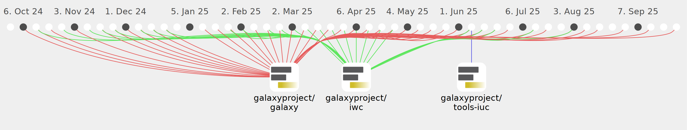

dannon

Commits all-time: 16755
Commits last year: 631

(424)
- b5951d5
- 9e01e37
- 484a72b
- eefc860
- 2a68691
- d489cc1
- 5f11830
- 3e15aa0
- 62e9b34
- dfcc69e
- c5d89e5
- fe2c01d
- 6586093
- f7ffd1a
- b227de3
- 2bdfbce
- bf5e8cb
- f67dc5c
- aed59a9
- 83b79a2
- 0134a4e
- e858bf0
- c98216d
- 8aadf1a
- 4de179a
- 73f29a3
- bb7c6c9
- 2832052
- 00536ce
- 706c8b5
- b635c7f
- e93e70b
- 20c8e12
- b70f90c
- cbc49fe
- 8109f78
- a7afb68
- de87409
- ff7025d
- f5e146d
- f6dad7b
- bafcc91
- 66fc7a6
- 5f83406
- 5e7e78f
- f2eca1b
- e921a29
- 54de5b8
- 97de7f3
- 2ed796a
- 1349d27
- e453ca1
- 63852c0
- a3266ce
- 389df8f
- 4a72ff5
- 43047b5
- 8740408
- b47d4f0
- 0019941
- 31c0eba
- e1599f3
- 3399f0f
- 8d8b5ed
- e3c5bd9
- 09852aa
- 557b0be
- 78ea109
- e57aa17
- cabe7da
- d179473
- 8c986bc
- 3730a8b
- 45110a1
- ed249d7
- d91fe36
- 07e5639
- 83a75ea
- 1e0d765
- a593135
- 42c5ec7
- 5a10e5c
- 2a98a4e
- e70afbc
- 4a80e07
- 9d8a696
- 23f2024
- 9dda997
- 5afc9e2
- bcac2a0
- 3f6fd64
- af90591
- 792913b
- d0a0c9b
- 7a80a08
- ef0bec7
- 75e1bae
- de5e356
- f2f21a6
- 2394a2e
- 88bf3db
- 907d405
- 7d40e35
- c821df7
- 38dcf14
- 81d51fb
- c5dad53
- 0d9b834
- 1fb9cd4
- cd0f066
- ebb9dc4
- c07cb13
- 7cadd27
- 3598a2a
- 82d4c0f
- 4d79215
- ac4034f
- b6f29ba
- 4c65556
- ac3bfaa
- 1c0dcb3
- 1cb7d7e
- 4f08b1c
- 1c75186
- 2748810
- 55e0992
- c6614ea
- 317efc3
- 0f04f0d
- fdaeac5
- 1688bd5
- 90f871e
- 0209143
- 2b12eec
- 6e394ce
- e0b8a42
- ec665eb
- 5e49cf8
- 2d3f1c5
- 92fa8e4
- 428f7de
- 25bcaa5
- ea3b089
- 6b9b30f
- 8dd17df
- 4ca8503
- ca2ce80
- d4e2dd5
- ae1d331
- 3a3fb89
- fe215d7
- c4adb50
- a4fc63b
- 5a65583
- c23f037
- 556e372
- a26ae5d
- 48ac8b8
- aaf6c76
- abc7fb4
- bb2c052
- 2d2c7c9
- 6dd4beb
- f88163b
- bffa562
- 3f6cc8b
- 8cf6e90
- 269f5ee
- 18b8afa
- eb3ae77
- 6f90ac3
- 90e4bc2
- 93dc1af
- 4978e6d
- c45f2e5
- fae9490
- 5aae6fd
- fbb4bdb
- 3f69e7e
- e9310b5
- 38afc8c
- c417229
- 7279c58
- fd422d4
- e0ef27a
- 214a963
- a77ea5e
- 0806c89
- 5aae864
- 452f3e4
- f2852f0
- 162093c
- 4a68177
- 312c134
- b9f4ca5
- 59ef0ee
- 5866409
- 6d69553
- bdc36f2
- 99de35e
- b173d2e
- 744af02
- fbd793d
- 299f039
- 8d109f8
- e78fc8a
- 26ae1ac
- 3bf1e04
- 3900dc1
- 4ceae54
- 0f8eb33
- 395bcc0
- 1c3462d
- 2f9c858
- 5042b45
- 358f7b4
- 63592cf
- 5da563c
- 7a70d09
- c49e94e
- 557cd6b
- 7cc9803
- 84d338c
- 4765e6e
- 64d3be1
- 7f39558
- a3ff6d7
- 7251faa
- 023412f
- 867dba2
- e8d857a
- 45373ad
- b456bcc
- 19aeda7
- ca5ab53
- 54b6396
- 22b710c
- 21ce436
- c4147e2
- a685137
- d5ed601
- 1984be1
- bf2f188
- 56b14dc
- 6948185
- b9af5fc
- e7d8e66
- a1ce48a
- c35421a
- 9b4789a
- 5c3a1b7
- ad6f981
- a634b25
- e822703
- 290466b
- 84192d9
- 498ddc9
- 3e3107f
- 0e54116
- 7301f75
- a9adce8
- 47ca870
- f7bdab1
- a673b2c
- f8c739e
- 2b579d7
- 46d4584
- c352685
- 78b4d05
- 4027bf6
- 672e8ea
- c01798d
- c053478
- a095578
- 90fcafe
- 1917dfc
- 0e304f5
- 39f96b4
- e8cfa1c
- 943344a
- 322d15d
- 5701a13
- 0796643
- 63ec1b7
- 5d48f0e
- 735f922
- a7e1548
- df26d92
- 97f978f
- 6bbf632
- 4652953
- f6e3879
- 596cb95
- 2f86b84
- 9a577ab
- adfd16e
- d473cb4
- e1c6aab
- 2164dee
- 95b4a70
- e433b47
- aacf13f
- ba18203
- 8111f85
- dabb154
- 4d5d834
- 764dbcd
- c562a35
- 85c55ac
- 8949bab
- a022069
- 2f306fa
- 3909ef5
- 8e3501a
- 90ce40b
- 3da3ed0
- eac679d
- 29ea0cf
- 9fdbbc3
- f46e326
- 34e1cee
- 28f872c
- 2cf27ac
- 0c84885
- d906996
- 8935ae6
- e111b50
- 4eb42ae
- cf7091f
- 45fdb1d
- 9a2e476
- 38d0b10
- a865365
- 9aac9bd
- 900ad2f
- de116a5
- 12396d0
- f58e9cb
- b0334ec
- 273efab
- 3d98e1c
- 06fd208
- 2b7eb44
- 96e98c1
- e94b6d6
- 7798c61
- 9575cb4
- 7f9eace
- f1964c8
- e00a601
- 9f4f3d0
- c57be28
- daef288
- 9ca0093
- 270ba9c
- bf5bd4b
- 1a294d5
- 0e8f200
- 6e4964e
- a92a3e3
- af2dfb6
- 3974b85
- 3e9d1a9
- ae0c70a
- e29ec85
- 488186f
- 67d86e7
- 9b0bc2b
- 1b1d959
- 7212c2c
- 86ecd96
- 97fb170
- 8217fd1
- 7ee1d3c
- 3b3cae6
- e2fa86e
- d24c28f
- bed407e
- 7ecbdb4
- 2281a70
- 5cb524c
- 75212d0
- 0648cbe
- 747c6d0
- af028c9
- aa1cf40
- b939088
- 5fb725a
- d0b9ef6
- 8bd9306
- ae52282
- 39ad160
- ca8d869
- 23d2e05
- 72568a7
- dabbe33
- 60ebeb7
- 2d7feeb
- a259064
- 43c3b51
- b26aad0
- 86a749d
- aa824b9
- d25a35e
- 3333f82
- e7dc06c
- e634402
- bb447e1
- b089848
- 14833d4
- 4adf2eb
- 00ddd4f
- 0288f26
- 458459c
- 1461cd8
- 724d629
- 7fc065e
- faf0548
- 8d1c026
- 0b0e409
- 80740c6
- 76ac175
- e982c51
- 8ebc13e
(206)
- d79acd5
- 8bfafef
- 6b3c86d
- 23d58ac
- 98e6fd5
- c145cb7
- 83b219f
- 0e2d82a
- 5f72a08
- d46ae8f
- 7079f73
- a78c1bb
- 6acc2f4
- 0a04aff
- 6a172a4
- ed90277
- b2b6be9
- 29bd52a
- 7d9db36
- 9197764
- 652bc4c
- f2909e3
- 425edd6
- 0aed1dc
- 8328a8f
- 93ff62f
- f87b9ed
- 72f8314
- c406e2a
- 70ff855
- 3efa0e4
- 6c1154a
- 6e801e0
- 4ebb200
- f288d53
- fa2885b
- d8055ac
- ae2540a
- 85cd99b
- c6f7f9d
- 9b4d5e9
- 621af81
- 1bbe1f0
- f917095
- bb2eab4
- 4aec699
- 4bff88e
- 0b051f7
- f0d7d23
- 7b7998f
- 545df68
- 297bd99
- 4c7e1d1
- a5ef766
- f874fb6
- 483af38
- 4d58150
- 2b2b81c
- ab48bde
- fb0e87b
- 2f06a39
- 6aa68e1
- 481900e
- 96d963a
- f89d3a2
- f0fd0be
- 1885df8
- f87aeb9
- 85bca16
- 3dcaae7
- 0b5f642
- 176a2f0
- d5aae7d
- 44a4ed8
- d64f877
- 5549c72
- 86e1591
- 1114755
- 3e0a792
- 099354b
- cc1071d
- 1516c8b
- 47ce26d
- 397c464
- 6ebb61c
- d8f11cd
- 886a49a
- fb36c73
- e03fc9c
- 03fb9ea
- c607c5a
- 82cfaff
- 6476797
- dc321f7
- ff0563a
- a580575
- 5a32392
- 0280b5e
- cc45700
- fed741b
- cc0d8f8
- 0796ddc
- d557a85
- 2d15ad7
- e7bf696
- 59bd55c
- 1013166
- 00a1101
- a3e978b
- 637f53b
- a2cbe94
- 6f875a3
- e00dc43
- e7d1f4c
- d5f2655
- e8eeb33
- 8d47d56
- 2b78a24
- 40eac9d
- 056e6fa
- 50302a2
- 34eb0be
- 21b0367
- 09c1c5d
- 2b9bbd9
- 30fcd82
- 71e935a
- 110f528
- efde278
- 60649a0
- 67201ea
- e5635cc
- 11b5edf
- 7b597e0
- f942668
- 9f86465
- 898be04
- ace4553
- 9cee235
- f0e8d9e
- 0cb48d3
- c74ab9a
- ed50fa0
- 12ec4d4
- 2b98353
- 6a96756
- af42182
- ba6f773
- 88f27e6
- 9957330
- 460e71d
- e7b548a
- 8a75a8b
- c34e6c0
- 2623a88
- 76159cd
- 30772ed
- b81db35
- 97ac7de
- eebae72
- cfccd1e
- a4d9b10
- 99e0e1b
- f4bcd9b
- 0152f90
- 1536acd
- 390843f
- 5675851
- 41c4480
- 88a0491
- 24c54d7
- 74b84fa
- fc824d8
- b334dc6
- 56fa54a
- 0f2efff
- 9f679b8
- eda2be0
- 8f38d12
- 8fc1440
- 110522c
- e04a529
- ed5229c
- 12731bc
- 0177e91
- 312140b
- a5c25e7
- 575eed8
- 7d42bab
- 1dab92d
- 2d5f9da
- e0fc9d2
- 4ab656a
- 02fa74d
- 8a52a20
- 516c209
- 75bea54
- 8edaf26
- 7d13946
- 4149b62
- 4e93346
- 96a5329
- d7b428a
- 3a7455e
- 9d5c3c4
- 8b8dab5
(1)